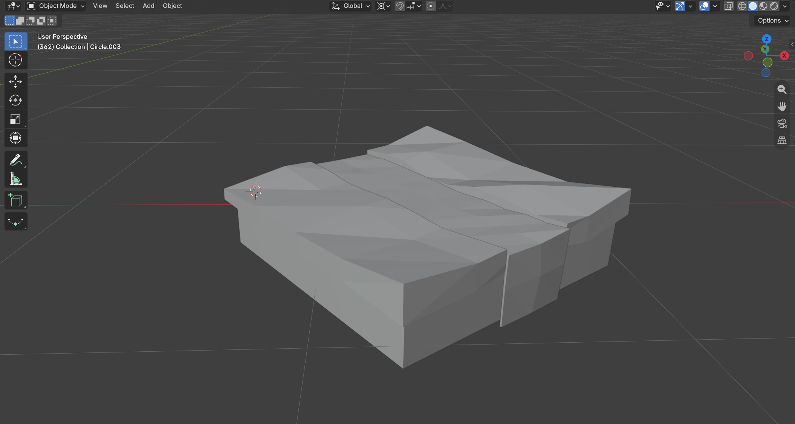
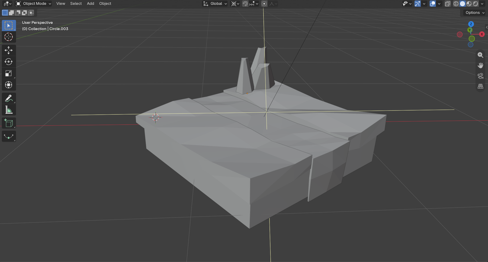
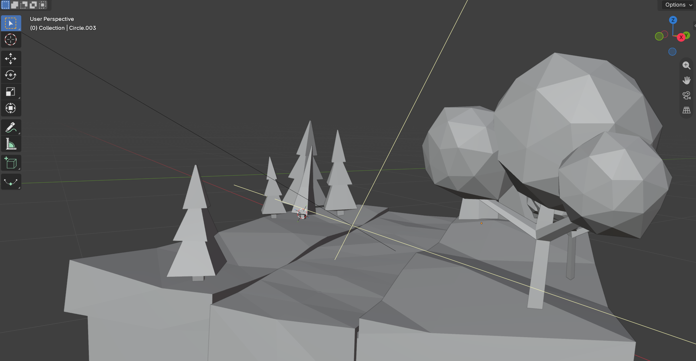
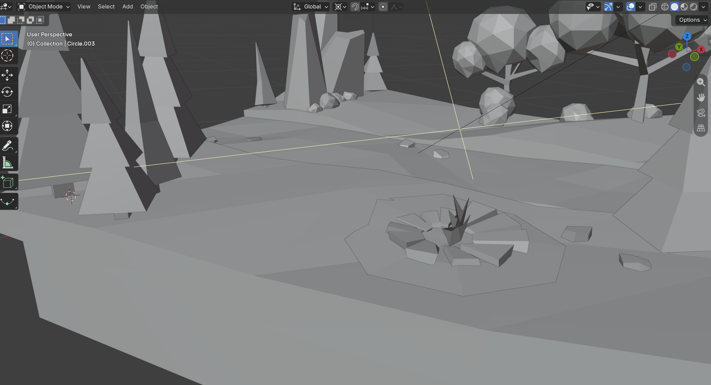
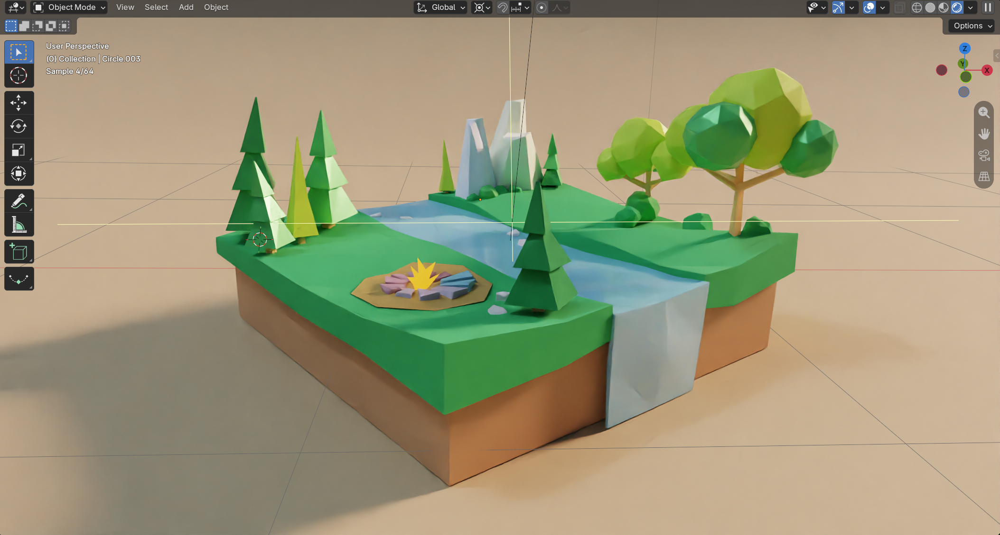
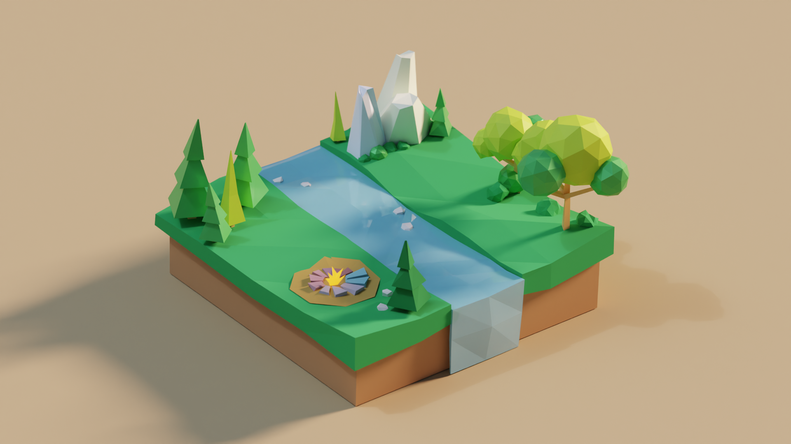
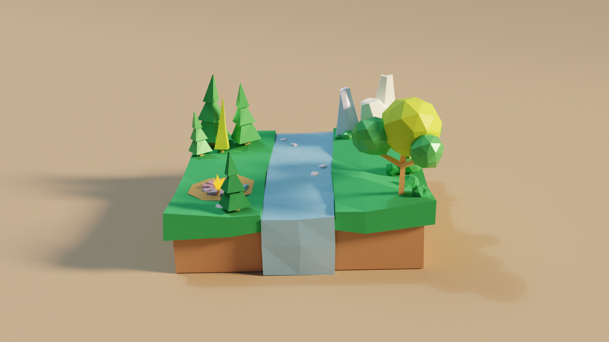
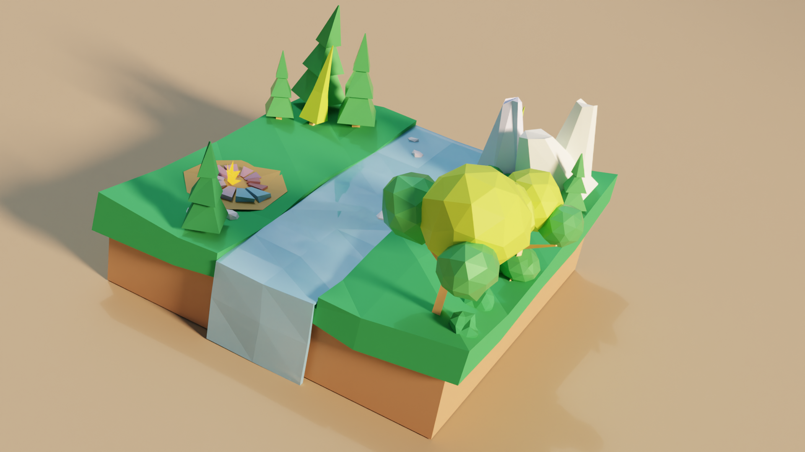

For this project, I built a small low poly landscape in Blender: a riverbank campsite with a waterfall, rock formations, pine trees, and leafy trees. I modeled three main objects (a pine tree, a leafy tree, and a campfire) and arranged them in one scene.
I've seen low poly scenes online for a while and always wanted to try making one. Most of my work is product design, so this was a nice change of pace. Instead of thinking about draft angles and internal housings, I got to think about rocks, trees, and water. I wanted the scene to feel calm and outdoorsy, like a spot you'd find on a hike.
I've used Blender before for product renders, but modeling a scene from scratch was new to me. I tried to come in with a fresh mind and experiment rather than rely on what I already knew. The biggest adjustment was switching from SolidWorks. The workflow is completely different, and I kept pressing the wrong shortcuts out of muscle memory. I found a few tutorials that helped me learn specific techniques, like building the trees and playing with the surfaces.
I started with a single block for the ground and used proportional editing with the random falloff setting to make the surface uneven and natural. From there, I shaped a channel through the middle for the river and split off the front edge so the water could drop down as a waterfall.

I made the rock formations by stretching icospheres into tall, angled shapes. Their sharp facets fit the low poly style without much extra work.

For both the pine trees and the leafy trees, I played around with scaling different 3D shapes until the proportions felt right. The pines are stacked cones of varying heights, and the leafy trees use icospheres on a simple branching trunk.

I modeled one rock, then duplicated it around the ring and rotated each copy slightly so the stones didn't look identical. For the flame, I moved individual vertices around until it had a spiky, flickering shape.

I kept materials as flat colors so the facets would read clearly. I used a warm sand background and a strong light source to cast long shadows, which gives the scene some depth.




This project pushed me to think less like a product designer and more like someone building a small world. I very much enjoyed the challenge and am excited to keep working at it!